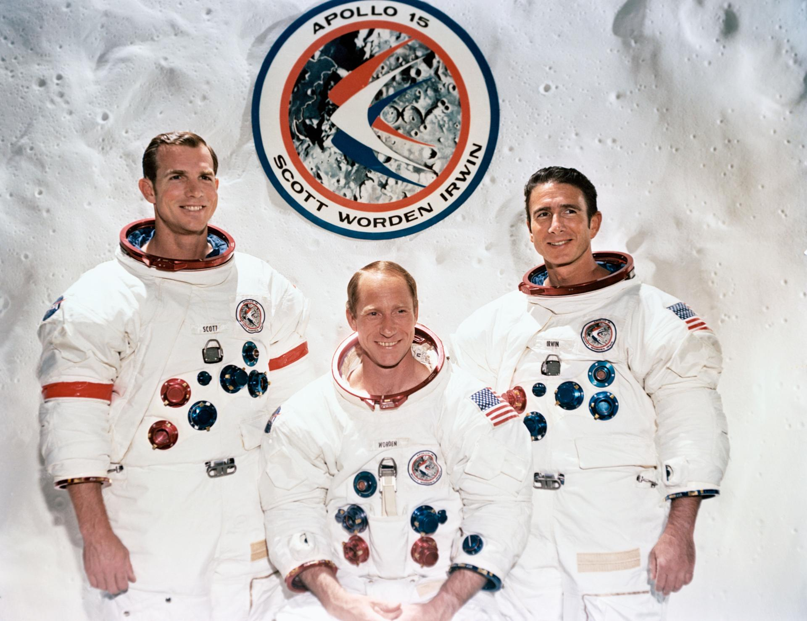

David Scott was one of the most accomplished astronauts of the Apollo era. Before Apollo 15, he flew on Gemini 8 and Apollo 9, gaining valuable experience in spacecraft operations and docking procedures.
As commander of Apollo 15, Scott led one of the most scientifically productive lunar missions ever conducted. He became the seventh person to walk on the Moon and helped oversee the first use of the Lunar Roving Vehicle.
Scott's mission demonstrated how astronauts could move beyond simple exploration and conduct sophisticated scientific investigations. His contributions greatly expanded humanity's understanding of the Moon.
Alfred Worden served as the Command Module Pilot aboard Apollo 15. While Scott and Irwin explored the lunar surface, Worden remained in lunar orbit conducting scientific experiments and mapping the Moon.
Worden operated advanced cameras and instruments that collected valuable data about the lunar environment. During the return journey to Earth, he performed a deep-space spacewalk to retrieve film canisters from the Service Module, becoming one of the few people ever to conduct a spacewalk so far from Earth.
His work provided scientists with information that continues to be studied decades later.
James Irwin became the eighth person to walk on the Moon during Apollo 15. Alongside Scott, he explored the Hadley-Apennine region and helped collect a large number of geological samples.
Irwin participated in the first lunar rover operations and spent more time exploring the Moon than any astronaut before him. His enthusiasm for scientific discovery made him a valuable member of the mission.
After retiring from NASA, Irwin devoted much of his life to educational and humanitarian work. His lunar experiences profoundly influenced the direction of his later life.